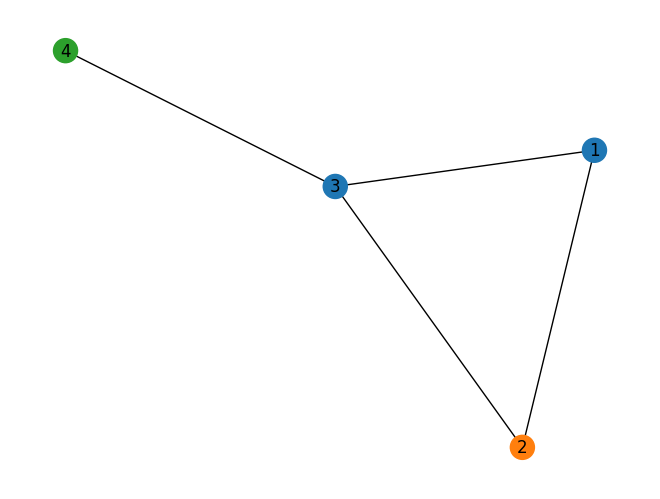

Credits: inspired to introduction in Raschka, Machine Learning with PyTorch, Chap 18
26. A (Very) Preliminary Introuduction to Graph Neural Networks#
GNNs have been an area of rapid development in recent years. Ac- cording to the State of AI report from 2021 (https://www.stateof.ai/2021-report-launch.html)
GNN are used for
Text classification (https://arxiv.org/abs/1710.10903)
Recommendation systems (https://arxiv.org/abs/1704.06803)
Traffic forecasting (https://arxiv.org/abs/1707.01926)
Drug discovery (https://arxiv.org/abs/1806.02473)
GNN (Graph Neural Network) is a general term for any neural network designed to operate on graph-structured data. It encompasses various architectures that can learn representations of nodes, edges, or entire graphs by aggregating information across graph structures.
GCN (Graph Convolutional Network) is a specific type of GNN that applies convolutional operations to graphs. It’s inspired by the concept of convolution in image processing and operates by aggregating a node’s features with its neighbors’ features, often using a normalized adjacency matrix to preserve structural information.
GCNs are more widely recognized and used, especially since the original GCN paper by Kipf and Welling (2016) made the approach popular for tasks like node classification and link prediction. However, GNN is a broader category, and newer architectures (like Graph Attention Networks or GATs) are also popular under the GNN umbrella for specific applications and improvements on the basic GCN model.
There are many different kinds of graph con- volutions, and the development of new graph convolutions is a very active area of research.
26.1. Introduction to graph data#
from IPython.display import Image
img_url = "https://raw.githubusercontent.com/cfteach/NNDL_DATA621/94de99576a12d36a84046589e11722516d240af6/DATA621/DATA621/images/im1.png"
Image(url=img_url, width = 600)

26.1.1. Undirected graphs#
An undirected graph consists of nodes (in graph theory also often called vertices) that are connected via edges where the order of the nodes and their connection does not matter.
img_url = "https://raw.githubusercontent.com/cfteach/NNDL_DATA621/94de99576a12d36a84046589e11722516d240af6/DATA621/DATA621/images/im2.png"
Image(url=img_url, width = 1000)

26.1.2. Directed graphs#
Directed graphs, in contrast to undirected graphs discussed in the previous section, connect nodes via directed edges. Mathematically they are defined in the same way as an undirected graph, except that \(E\), the set of edges, is a set of ordered pairs. Therefore, element \(x_{ij}\) of A does need not to be equal to \(x_{ji}\).
img_url = "https://raw.githubusercontent.com/cfteach/NNDL_DATA621/94de99576a12d36a84046589e11722516d240af6/DATA621/DATA621/images/im3.png"
Image(url=img_url, width = 600)

26.1.3. Labeled graphs#
26.2. Representing molecules as graphs#
Many graphs we are interested in working with have additional information associated with each of their nodes and edges. For example, if you consider the caffeine molecule below. Each node (vertex \(V\)) has \(f_{V}\) features.
img_url = "https://raw.githubusercontent.com/cfteach/NNDL_DATA621/94de99576a12d36a84046589e11722516d240af6/DATA621/DATA621/images/im4.png"
Image(url=img_url, width = 600)

26.3. Understanding graph convolutions#
To understand the motivation behind using graph convolutions, we have to do one step back and think of CNN.
In the CNN, the filter can be viewed as a “detector” for a specific feature. This approach to feature detection is well-suited for images for several reasons:
Shift-invariance: We can still recognize a feature in an image regardless of where it is located (for example, after translation). A cat can be recognized as a cat whether it is in the top left, bottom right, or another part of an image.
Locality: Nearby pixels are closely related.
Hierarchy: Larger parts of an image can often be broken down into combinations of associated smaller parts. A cat has a head and legs; the head has eyes and a nose; the eyes have pupils and irises.
Another reason convolutions are well-suited for processing images is that the number of trainable parameters does not depend on the dimensionality of the input. You could train a series of 3×3 con- volutional filters on, for example, a 256×256 or a 9×9 image.
Like images, graphs also have natural properties that justify a convolutional approach. Both approaches share the locality property: a node that is one edge away is more likely to be related than a node five edges away. For example, in a citation graph, a directly cited publication, which would be one edge away, is more likely to have similar subject matter than a publication with multiple degrees of separation.
A strict property for graph data is permutation invariance, which means that the ordering of the nodes does not affect the output.
img_url = "https://raw.githubusercontent.com/cfteach/NNDL_DATA621/94de99576a12d36a84046589e11722516d240af6/DATA621/DATA621/images/im5.png"
Image(url=img_url, width = 1000)

The same graph can be represented by multiple adjacency
26.4. Implementing a basic graph convolution#
img_url = "https://raw.githubusercontent.com/cfteach/NNDL_DATA621/94de99576a12d36a84046589e11722516d240af6/DATA621/DATA621/images/im6.png"
Image(url=img_url, width = 1000)

import networkx as nx
import numpy as np
G = nx.Graph()
#Hex codes for colors if we draw graph
blue, orange, green = "#1f77b4", "#ff7f0e","#2ca02c"
G.add_nodes_from([(1, {"color": blue}),
(2, {"color": orange}),
(3, {"color": blue}),
(4, {"color": green})])
G.add_edges_from([(1, 2),(2, 3),(1, 3),(3, 4)])
A = np.asarray(nx.adjacency_matrix(G).todense())
print(A)
[[0 1 1 0]
[1 0 1 0]
[1 1 0 1]
[0 0 1 0]]
def build_graph_color_label_representation(G,mapping_dict):
one_hot_idxs = np.array([mapping_dict[v] for v in
nx.get_node_attributes(G, 'color').values()])
one_hot_encoding = np.zeros((one_hot_idxs.size,len(mapping_dict)))
one_hot_encoding[np.arange(one_hot_idxs.size),one_hot_idxs] = 1
return one_hot_encoding
X = build_graph_color_label_representation(G, {green: 0, blue: 1, orange: 2})
print(X)
[[0. 1. 0.]
[0. 0. 1.]
[0. 1. 0.]
[1. 0. 0.]]
color_map = nx.get_node_attributes(G, 'color').values()
nx.draw(G, with_labels=True, node_color=color_map)

Each node in a graph has a set of features represented by embedding in a matrix \(X\). \(x_{i}\) is the feature vector for node \(i\).
For our example implementation, the graph convolution will take the following form:
\( \mathbf{x}_i' = \mathbf{x}_i \mathbf{W}_1 + \sum_{j \in \mathcal{N}(i)} \mathbf{x}_j \mathbf{W}_2 + \mathbf{b} \)
where:
\(\mathbf{x}_i'\) is the updated embedding for node \(i\),
\(\mathbf{W}_1\) and \(\mathbf{W}_2\) are \(f_{\text{in}} \times f_{\text{out}}\) matrices of learnable filter weights,
\(\mathbf{b}\) is a learnable bias vector of length \(f_{\text{out}}\).
img_url = "https://raw.githubusercontent.com/cfteach/NNDL_DATA621/94de99576a12d36a84046589e11722516d240af6/DATA621/DATA621/images/im7.png"
Image(url=img_url, width = 800)

The graph convolution is more effective when there is a locality property.
By stacking other convolution layers, the updated embeddings can incorporate information from nodes that were originally edges away.
f_in, f_out = X.shape[1], 6
W_1 = np.random.rand(f_in, f_out)
W_2 = np.random.rand(f_in, f_out)
h = np.dot(X,W_1) + np.dot(np.dot(A, X), W_2)
The following notation is inherited from ‘‘Neural Message Passing for Quantum Chemistry’’ by Justin Gilmer and colleagues, 2017, https://arxiv.org/abs/1704.01212.
img_url = "https://raw.githubusercontent.com/cfteach/NNDL_DATA621/94de99576a12d36a84046589e11722516d240af6/DATA621/DATA621/images/im8.png"
Image(url=img_url, width = 600)

26.5. Implementing a GNN in PyTorch#
26.5.1. Defining the NodeNetwork model#
import networkx as nx
import torch
from torch.nn.parameter import Parameter
import numpy as np
import torch.nn.functional as F
class NodeNetwork(torch.nn.Module):
def __init__(self, input_features):
super().__init__()
self.conv_1 = BasicGraphConvolutionLayer(input_features, 32)
self.conv_2 = BasicGraphConvolutionLayer(32, 32)
self.fc_1 = torch.nn.Linear(32, 16)
self.out_layer = torch.nn.Linear(16, 2)
def forward(self, X, A,batch_mat):
x = self.conv_1(X, A).clamp(0)
x = self.conv_2(x, A).clamp(0)
output = global_sum_pool(x, batch_mat)
output = self.fc_1(output)
output = self.out_layer(output)
return F.softmax(output, dim=1)
As we will see, batch_mat indicates which nodes belong to which graph in a bacth of graphs (each with different dimensions)
The following gives an idea of what we want to achieve.
img_url = "https://raw.githubusercontent.com/cfteach/NNDL_DATA621/94de99576a12d36a84046589e11722516d240af6/DATA621/DATA621/images/im9.png"
Image(url=img_url, width = 600)

26.6. Coding the NodeNetwork’s graph convolution layer#
class BasicGraphConvolutionLayer(torch.nn.Module):
def __init__(self, in_channels, out_channels):
super().__init__()
self.in_channels = in_channels
self.out_channels = out_channels
self.W2 = Parameter(torch.rand(
(in_channels, out_channels), dtype=torch.float32))
self.W1 = Parameter(torch.rand(
(in_channels, out_channels), dtype=torch.float32))
self.bias = Parameter(torch.zeros(
out_channels, dtype=torch.float32))
def forward(self, X, A):
potential_msgs = torch.mm(X, self.W2)
propagated_msgs = torch.mm(A, potential_msgs)
root_update = torch.mm(X, self.W1)
output = propagated_msgs + root_update + self.bias
return output
26.7. Adding a global pooling layer to deal with varying graph sizes#
The following global_sum_pool sums all the node embeddings of a graph
def global_sum_pool(X, batch_mat):
if batch_mat is None or batch_mat.dim() == 1:
return torch.sum(X, dim=0).unsqueeze(0)
else:
return torch.mm(batch_mat, X) #[num_graphs, feature_dim]
#batch_mat[i,j] means node j belongs to graph i
#batch_mat [num_graphs, num_nodes]
# X [num_nodes, feature_dim]
The following si a simplified GCN with only W1. To give an idea of how it operates with batches.
img_url = "https://raw.githubusercontent.com/cfteach/NNDL_DATA621/94de99576a12d36a84046589e11722516d240af6/DATA621/DATA621/images/im10.png"
Image(url=img_url, width = 1000)

# creates a batch indicator matrix based on a list graph_sizes
# the following works at the batch level
def get_batch_tensor(graph_sizes): #graph_sizes is a list where each element is the size of a graph
starts = [sum(graph_sizes[:idx]) for idx in range(len(graph_sizes))]
stops = [starts[idx]+graph_sizes[idx] for idx in range(len(graph_sizes))]
tot_len = sum(graph_sizes)
batch_size = len(graph_sizes)
batch_mat = torch.zeros([batch_size, tot_len]).float() # tot_len is the number of nodes
for idx, starts_and_stops in enumerate(zip(starts, stops)): #idx is the graph index in the batch
start = starts_and_stops[0]
stop = starts_and_stops[1]
batch_mat[idx, start:stop] = 1
return batch_mat
# the following combines mutliple graphs in a batch into a single unified representation
def collate_graphs(batch):
adj_mats = [graph['A'] for graph in batch] #graph['A'] extracts the adjacency matrix
sizes = [A.size(0) for A in adj_mats] # number of nodes in each graph
tot_size = sum(sizes) # tot number of nodes in the batch
# create batch matrix
batch_mat = get_batch_tensor(sizes) #[batch_size, tot_size]
# combine feature matrices
feat_mats = torch.cat([graph['X'] for graph in batch],dim=0)
# combine labels
labels = torch.cat([graph['y'] for graph in batch], dim=0)
# combine adjacency matrices
batch_adj = torch.zeros([tot_size, tot_size], dtype=torch.float32)
accum = 0
for adj in adj_mats:
g_size = adj.shape[0]
batch_adj[accum:accum+g_size, accum:accum+g_size] = adj
accum = accum + g_size
repr_and_label = {
'A': batch_adj, # block diagonal adjacency matrix in the batch
'X': feat_mats, # combied feature matrix
'y': labels,
'batch' : batch_mat}
return repr_and_label
26.8. Preparing the DataLoader#
def get_graph_dict(G, mapping_dict):
# build dictionary representation of graph G
A = torch.from_numpy(np.asarray(nx.adjacency_matrix(G).todense())).float()
# build_graph_color_label_representation() was introduced with the first example graph
X = torch.from_numpy(build_graph_color_label_representation(G,mapping_dict)).float()
# kludge since there is not specific task for this example
y = torch.tensor([[1, 0]]).float() # one-hot encoded
return {'A': A, 'X': X, 'y': y, 'batch': None}
# building 4 graphs to treat as a dataset
blue, orange, green = "#1f77b4", "#ff7f0e","#2ca02c"
mapping_dict = {green: 0, blue: 1, orange: 2}
G1 = nx.Graph()
G1.add_nodes_from([(1, {"color": blue}),
(2, {"color": orange}),
(3, {"color": blue}),
(4, {"color": green})])
G1.add_edges_from([(1, 2), (2, 3),(1, 3), (3, 4)])
G2 = nx.Graph()
G2.add_nodes_from([(1, {"color": green}),
(2, {"color": green}),
(3, {"color": orange}),
(4, {"color": orange}),
(5,{"color": blue})])
G2.add_edges_from([(2, 3),(3, 4),(3, 1),(5, 1)])
G3 = nx.Graph()
G3.add_nodes_from([(1, {"color": orange}),
(2, {"color": orange}),
(3, {"color": green}),
(4, {"color": green}),
(5, {"color": blue}),
(6, {"color":orange})])
G3.add_edges_from([(2, 3), (3, 4), (3, 1), (5, 1), (2, 5), (6, 1)])
G4 = nx.Graph()
G4.add_nodes_from([(1, {"color": blue}), (2, {"color": blue}), (3, {"color": green})])
G4.add_edges_from([(1, 2), (2, 3)])
graph_list = [get_graph_dict(graph,mapping_dict) for graph in [G1, G2, G3, G4]]
img_url = "https://raw.githubusercontent.com/cfteach/NNDL_DATA621/94de99576a12d36a84046589e11722516d240af6/DATA621/DATA621/images/im11.png"
Image(url=img_url, width = 1000)

from torch.utils.data import Dataset
from torch.utils.data import DataLoader
class ExampleDataset(Dataset):
# Simple PyTorch dataset that will use our list of graphs
def __init__(self, graph_list):
self.graphs = graph_list
def __len__(self):
return len(self.graphs)
def __getitem__(self,idx):
mol_rep = self.graphs[idx]
return mol_rep
dset = ExampleDataset(graph_list)
# Note how we use our custom collate function
loader = DataLoader(dset, batch_size=2, shuffle=False, collate_fn=collate_graphs)
26.9. Using the NodeNetwork to make “predictions”#
No training yet. We just familiarized with working with graph data.
torch.manual_seed(123)
node_features = 3
net = NodeNetwork(node_features)
batch_results = []
for b in loader:
batch_results.append(net(b['X'], b['A'], b['batch']).detach())
G1_rep = dset[1]
G1_single = net(G1_rep['X'], G1_rep['A'], G1_rep['batch']).detach()
G1_batch = batch_results[0][1]
torch.all(torch.isclose(G1_single, G1_batch))
tensor(True)